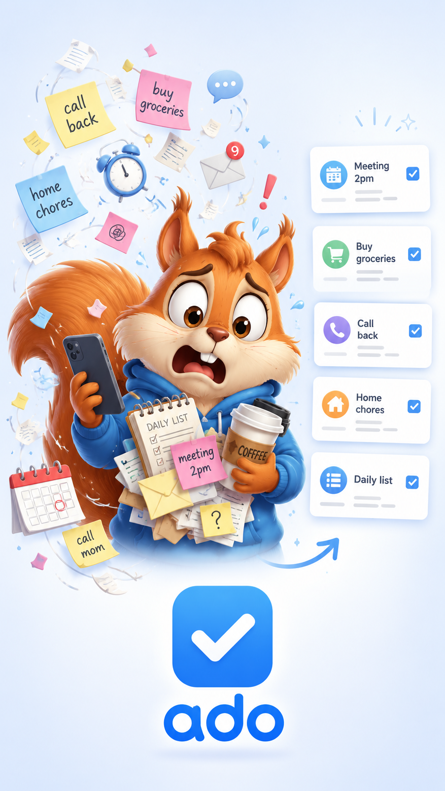

Lists that fit the job
Organize projects, tasks, and subtasks, with reusable templates and generated lists for recurring routines.
Projects, tasks, checklists, and daily lists without turning your life into a project-management system.

Organize projects, tasks, and subtasks, with reusable templates and generated lists for recurring routines.
Add items as they occur to you, then reorder them into the sequence that makes sense for the day, the store, or the job.
The current Android app keeps its working data on your device. There is no Ado account, advertising system, analytics service, or developer-operated sync server.
Ado's current Android version stores projects and lists locally. Calendar access is optional and used only when you ask Ado to import calendar events into a daily list.